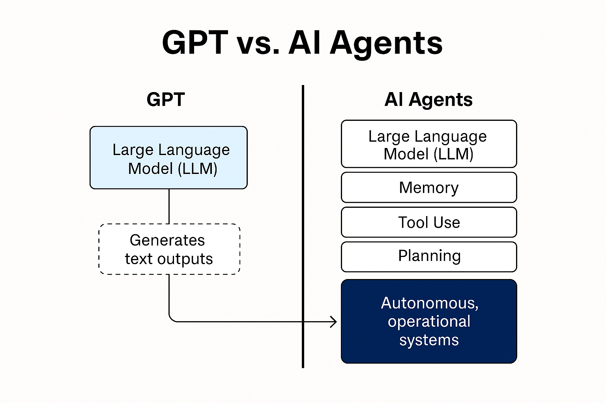

GPT vs. AI Agents: Why Intelligence Alone Isn’t Enough

GPT vs. AI Agents: Why Intelligence Alone Isn’t Enough
The rise of large language models (LLMs) like GPT-4 has ushered in a new era of generative AI, capable of understanding and generating human-like text with remarkable fluency. But at symplistic.ai, we’re focused not just on conversation, but on getting real work done in enterprise environments. That’s why we chose to build AI agents instead of simply deploying GPT-based assistants.
In this blog, we’ll explain the technical and architectural differences between GPT models and AI agents, and why we believe agentic systems are the future of intelligent automation in banking and beyond.
GPT: The Engine, Not the Vehicle
GPT (Generative Pre-trained Transformer) is a foundation model trained on a vast corpus of internet text. It excels at:
- • Natural language understanding and generation
- • Summarization, translation, rewriting
- • Basic reasoning and task planning (via prompting)
However, GPT on its own is stateless, tool-less, and task-agnostic. It doesn’t:
- • Retain memory across sessions
- • Take actions or trigger workflows
- • Interface directly with external tools or APIs
Think of GPT as a highly intelligent reasoning engine, but not a self-sufficient worker.
What Are AI Agents?
AI agents are autonomous systems designed to achieve specific goals. They use LLMs like GPT for language and reasoning, but are architected with additional components such as:
- • Memory: Track conversations, tasks, and outcomes over time
- • Tool use: APIs, databases, third-party systems (e.g., CRM, KYC tools)
- • State management: Workflow orchestration and context retention
- • Goal planning: Decomposing objectives into steps and sub-tasks
- • Autonomy: Acting without constant human prompts
- • Guardrails: Monitoring, escalation, and policy enforcement
In other words, AI agents combine intelligence + actionability.

Why AI Agents Matter in Regulated Industries
In sectors like banking, insurance, and healthcare, technology isn’t just about performance, it’s about trust, compliance, and explainability. Here’s why AI agents are a better fit:
1. Defined Scope and Governance
Agents operate within predefined boundaries. For example, a loan processing agent may:
- • Pull credit data
- • Calculate eligibility
- • Pre-fill forms
- • Escalate to a human under specific conditions
GPT alone has no notion of scope, guardrails, or workflows.
2. Explainability and Auditability
AI agents can log every decision, step, and data source. When auditors or compliance teams ask, “Why did this decision happen?”, the agent can explain its reasoning.
GPT outputs are opaque unless manually engineered with prompt chains or explanations.
3. Data Privacy and Role-Based Access
Agents can be permissioned based on user role and context and can enforce data minimization. GPT, when used naively, may expose or hallucinate sensitive data.
4. Resilience and Monitoring
Agents can be paused, retrained, or rolled back if their behavior drifts or breaks. With GPT alone, it’s difficult to monitor long-term behavior patterns or enforce continuous QA.
Our Architecture at symplistic.ai
At symplistic.ai, we build domain-specific AI agents on top of trusted platforms like IBM watsonx Orchestrate. Our agents include:
- • A reasoning core powered by LLMs (GPT-4, watsonx, Claude, etc.)
- • A tool layer for interacting with enterprise APIs, databases, and systems
- • A context engine that manages state, memory, and historys
- • Guardrails including compliance checks, escalation logic, and kill switches
- • A logging and observability layer for explainability and audit readiness
Why Didn’t We Stop at GPT?
We see GPT as a critical component, but not a full solution. For enterprise clients, especially in banking, success means:
- • Automating real tasks, not just answering questions
- • Meeting compliance standards
- • Integrating with existing systems
- • Giving users confidence and control
AI agents are how we bridge that gap. GPT changed the game, but AI agents are how you win it. At symplistic.ai, we’re building intelligent, explainable agents that don’t just think, they act, collaborate, and comply.
If you’re a bank, fintech, or enterprise looking to deploy AI that delivers results, reach out. The future isn’t just conversational, it’s agentic.
Explore our solutions at
See all our blogs here.